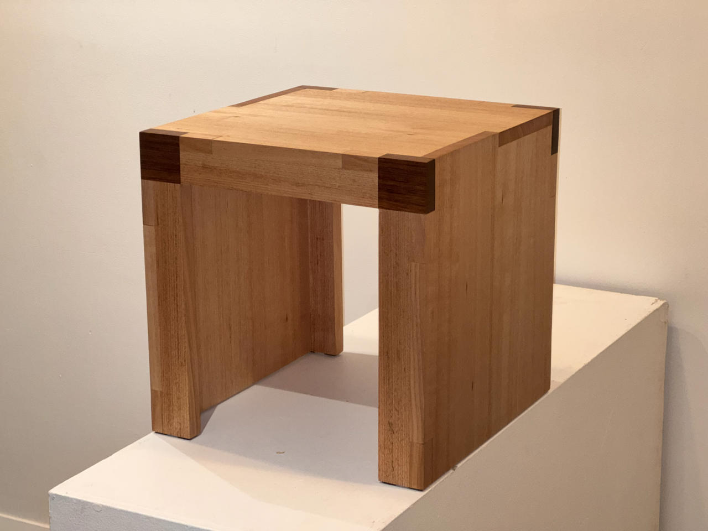
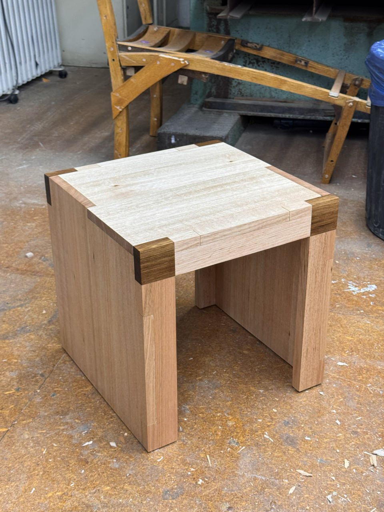

Table.
Semester 1, 2025.
The final assessment task for Mediating Spaces Through Object Design was to design and construct an elevated surface. I responded to the brief with this table, featuring three interlocking panels with darkwood corner pieces.


Table. Recycled hardwood offcuts.